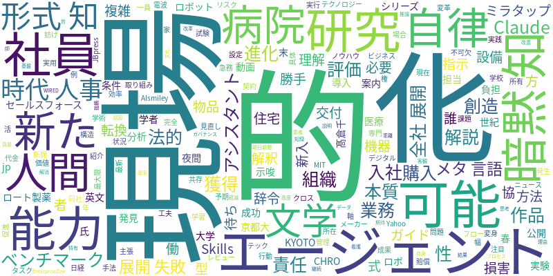

☁️ 今日のトレンドワード

📰 今日のピックアップニュース (10件)
AIは暗黙知を形式知化できない
AIに暗黙知を学習させても、そのままでは形式知として活用できない。AIが現場の暗黙知を理解・活用するには、人間の専門家による解釈や構造化、そしてAIが現場の状況を理解できるような工夫が必要となる。暗黙知の形式知化には、AIと人間の協働が不可欠である。
AIベンチマークは現場で活かせるか？
現在のAIベンチマークは、学術的な評価に偏り、現場で実用的なAI開発の妨げとなっている。AIの評価軸を、実際の業務フローやビジネス成果に結びつくものへと転換する必要がある。現場で使えるAI開発を促進するため、評価手法の見直しが求められる。
Claudeを自律型アシスタントに進化
Claude Skillsを活用することで、指示待ちAIを自律的にタスクを実行できるアシスタントへと進化させることが可能になる。具体的な設定方法や活用例を紹介し、AIの能力を最大限に引き出すためのノウハウを解説。AI活用の幅を広げるための実践的なガイド。
AI社員、新入社員として入社
住宅設備機器メーカーのミラタップが、入社式でAIに「AI社員」として辞令を交付した。これは、AIを組織の一員として捉え、業務効率化や新たな価値創造を目指す同社の取り組みを示している。AIとの共存・協働による働き方の変革に注目が集まる。
AIエージェントの購入、誰が責任？
AIエージェントが勝手に物品を購入した場合の法的責任の所在が課題となっている。AIの自律的な行動により、利用者の予期せぬ損害が発生する可能性があり、契約や所有権、損害賠償といった法的な問題が複雑化している。AI利用におけるリスク管理が急務。
AIエージェント全社展開、失敗の理由
AIエージェントの全社展開が失敗する背景には、単なる技術導入に留まることや、現場との乖離がある。セールスフォースは、組織文化、データ基盤、ガバナンス、そして継続的な改善という4つの条件を満たすことで、AIエージェントの成功確率を高められると指摘している。
AIロボが病院の見守り担当
大学病院で、AIロボットが夜間の患者見守りや案内業務を担当する実験が行われている。これにより、看護師の負担軽減や、より質の高い医療サービスの提供が期待される。AIロボットの導入は、医療現場の働き方改革に繋がる可能性を秘めている。
AIがメタ言語能力を獲得
AIが、人間特有の能力とされてきた「メタ言語」能力を獲得したという研究結果が示された。これにより、AIは自身の思考プロセスや知識を客観的に分析・説明できるようになり、より高度な推論や創造的な活動が可能になる。AIの進化に新たな局面が開かれる。
AI時代の人事、本質とは？
AI時代において、人事部門に求められる役割や本質について、元ロート製薬CHROの髙倉千春氏が解説するシリーズが公開された。AIを活用しつつ、従業員のエンゲージメント向上や組織開発をどのように進めるべきか、AI時代の人事戦略のあり方が示唆される。
AIが文学研究の新境地を開拓
京都大学の英文学者が、AIを用いて19世紀末の文学作品を研究し、新たな視点を発見している。AIによる作品の動画化や分析は、従来の文学研究の枠を超え、新たな解釈や発見を可能にする。AIが人文科学分野でも創造的な貢献を果たす可能性を示唆している。
今日のAI・テック業界は、AIの「知能」の進化と、それをいかに「現場」で活かすかという現実的な課題が交錯しています。暗黙知をAIに学習させても形式知化が難しいという指摘は、AIの理解能力の限界と、人間による解釈の重要性を示唆しています。一方、AIベンチマークの「学校の試験」からの脱却を訴える声は、実用性を重視する現場のニーズを浮き彫りにしています。ClaudeのようなAIを「自律型アシスタント」に変える試みや、AIエージェントが勝手に物品購入する際の法的責任問題など、AIがより能動的に、そして予期せぬ形で社会に溶け込み始めている現状が伺えます。セールスフォースが示すAIエージェント全社展開の成功条件は、技術だけでなく組織文化やデータ基盤といった複合的な要因が重要であることを示唆しています。さらに、病院でのAIロボット活用、文学研究におけるAIの応用、そしてAI時代に求められる人事の本質といったニュースからは、AIが専門分野を超えて多岐にわたる領域で、人間の能力を拡張し、新たな可能性を切り拓こうとしている様子が伝わってきます。AIの「メタ言語」能力獲得というニュースは、AIの知能の深まりを予感させ、今後の進化に期待が高まります。